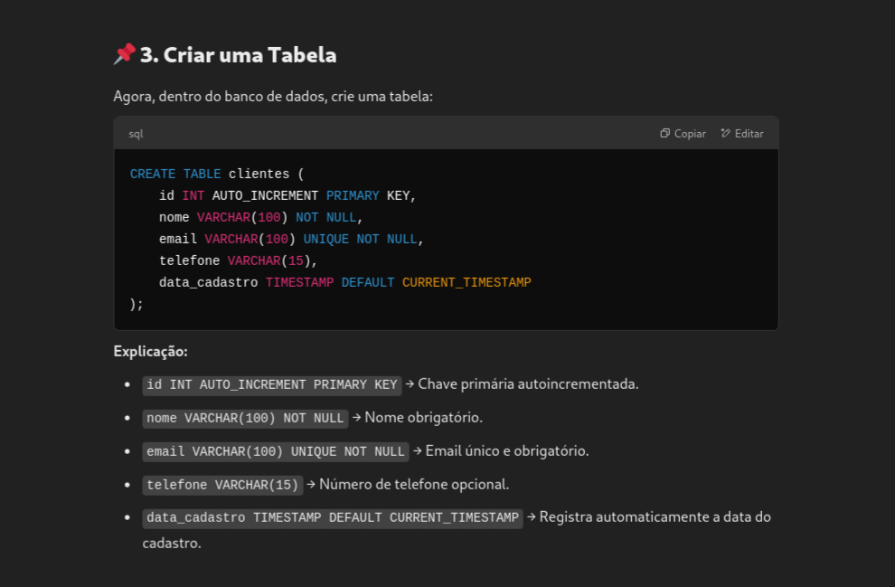

Sobre MySQL
O MySQL é um dos sistemas de gerenciamento de banco de dados relacionais (RDBMS) mais populares e amplamente utilizados no mundo. Ele é baseado na linguagem SQL (Structured Query Language) e é conhecido por sua rapidez, confiabilidade e facilidade de uso. Desenvolvido originalmente pela MySQL AB, o MySQL agora é mantido pela Oracle Corporation.
